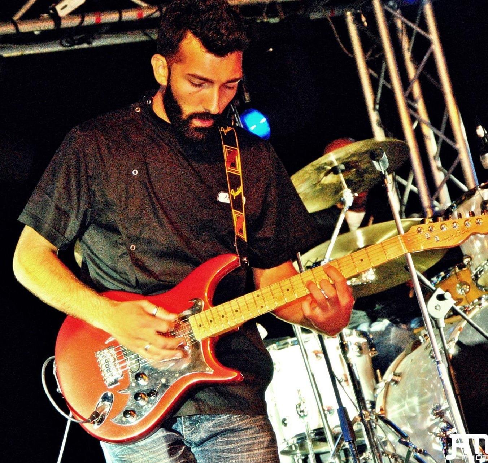
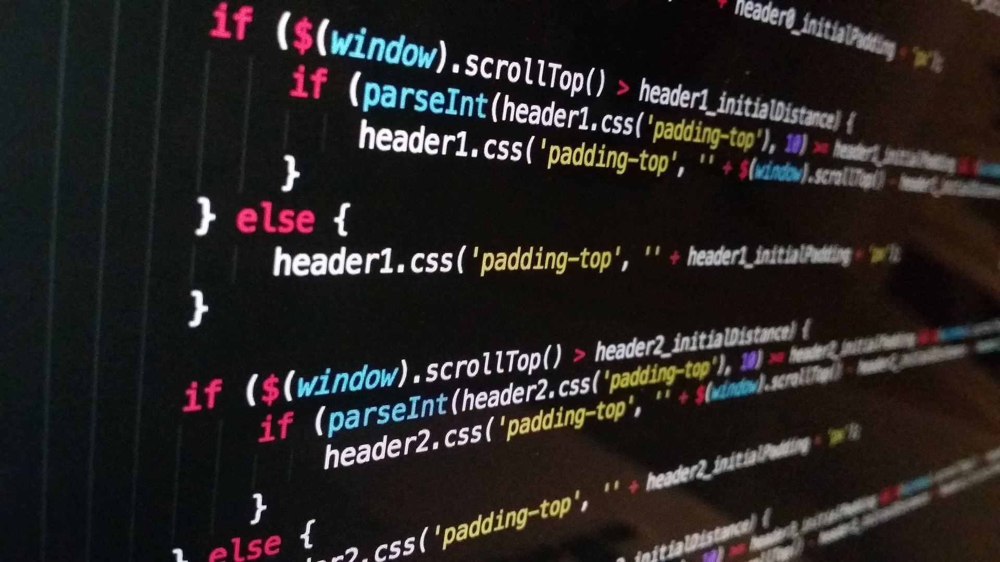
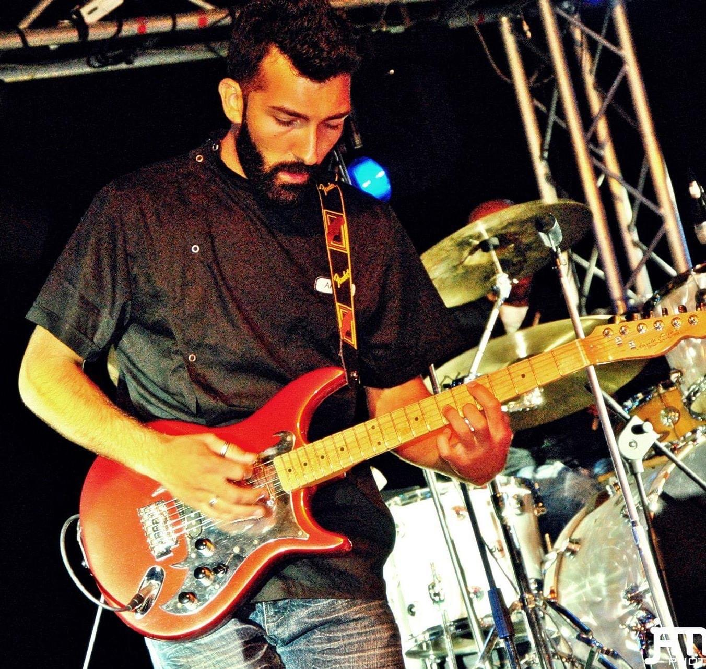
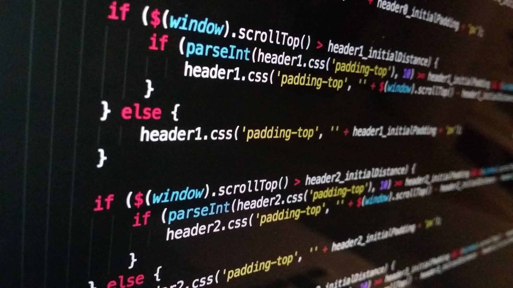

Commercialista · Programmatore Junior · Designer · Gastronomo
Chi sono
Sono una persona molto curiosa. Mi piace molto approfondire argomenti che reputo interessanti e sono alla continua ricerca di esperienze motivanti, che mi permettano di specializzarmi, che possano farmi progredire nella salita della scala professionale, scala che, in fin dei conti, reputo infinita, visto che una persona non smette mai di imparare. Quello che so fare l'ho imparato sperimentando e studiando, buttandomi in ogni esperienza interessante che la vita mi ha offerto.
Fondamentalmente ho lasciato il mio Paese, l'Italia, proprio perché dove io vivevo mi sono sempre sentito stretto, circondato da grosse mura, impossibilitato a contenere la mia voglia di esperienze. Era un posto chiuso, fondato sulla ricerca di certezze e non di esperienze, di "comfort zone" non di rischi. Io invece volevo altro. Io volevo un futuro migliore per i miei figli, non volevo che lavorassero tutto il giorno per ottenere un misero stipendio senza prospettive di crescita professionale, senza obiettivi.
Da quando ho messo piede in Svizzera nel 2016 mi é esploso il cervello. Le mie vedute si sono ampliate, ho cominciato ad imparare davvero tanto. Ho studiato moltissimo, in primis la lingua tedesca, a me ignara fino a quel momento. Dopo ho seguito corsi su corsi, informandomi su come potessi imparare il piú possibile, come potessi potenziare le mie capacitá.
Ho studiato UX-Design, visto che il mondo si stava muovendo verso quella direzione ormai. I siti e i programmi oramai stavano diventando tutte Applicazioni, dato che si utilizzavano ormai soltanto con lo smartphone. Dopo mi sono concentrato sulla grafica 3D, sul game design. Questo era un campo che mi ha sempre affascinato. Ho fondato una societá con un socio, SkinSoftware GmbH, dove mi occupavo di design e ho cominciato a scoprire la contabilitá. Ho anche imparato tantissimo sulla programmazione (come si puó vedere anche da questo sito interamente scritto con codice da me soltanto).
Successivamente mi é capitata un'occasione speciale: ho potuto aprire un mio locale gastronomico con la partecipazione ed il supporto in societá di mia moglie, Pizza e Birri GmbH. Avendo appunto studiato anche per conseguire la qualifica ed il certificato di Gestore Gastronomico (necessario nel canton Argovia per poter aprire un'attivitá gastronomica) mi é stata offerta questa opportunitá. Purtroppo non tutte le cose vanno bene, non tutti gli accordi sono sempre chiari fin dall'inizio e non tutte le attivitá possono nascere senza un grande supporto economico alle spalle fin dall'inizio, e qui ho imparato molte altre cose sugli accordi commerciali. Avendo circa vent'anni di esperienza nel settore gastronomico, ci siamo buttati in quest'altra avventura, che ci ha donato molta altra esperienza, senza la quale non avrei mai scoperto di essere portato per la contabilitá e che dunque mi ha fatto intraprendere un'altrop percorso, ovvero studiare economia e finanza all'AKAD, una delle migliori scuole di Zurigo.
Ed eccoci quí, non demordo, posso e voglio ancora imparare tantissime altre cose, voglio vedere cosa mi offrirá ancora il futuro. Dove andró a finire stavolta? La storia continua...